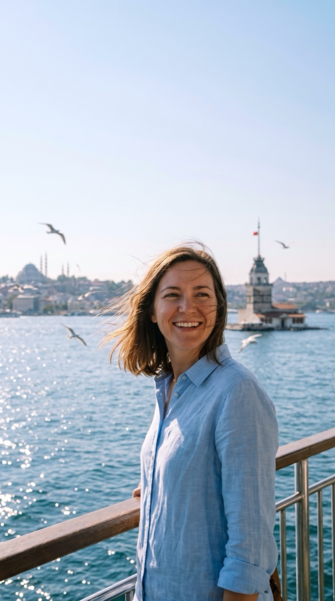

Day 1
Day 1Arrive and full eye exam
- MorningMet at the airport, driven to your hotel
- 14:00Exam at the hospital, about 2–3 hours: scans, corneal thickness, eye pressure, retina
- 17:00Meet your surgeon, confirm the plan, sign consent in English
Laser eye surgery takes 3 days in Istanbul. Lens surgery and keratoconus treatment take 4–7 nights. Here is what happens each day, where you stay, who is with you, and what to sort out before you fly.
Updated 28 October 2026

Everything medical is agreed before you book a flight. These are typical days, so you can see what is planned and how much time you have to rest. Your written plan gives your exact times.
Pick your treatment family. Not sure which one you need? A surgeon tells you in your written plan.
Both eyes are treated in one session. Trans-PRK needs 4–5 nights while the surface of the eye heals, so it follows the longer plan.
Day 1 Day 2
Day 2 Day 3
Day 3For EVO ICL, lens replacement, cataract surgery, keratoconus (CXL) and Trans-PRK. Lens surgery is often done one eye at a time, a day or so apart. Your surgeon sets your exact days.
 Day 1
Day 1 Days 2–3
Days 2–3 Day 4 onwards
Day 4 onwardsThe questions patients ask before they book. Each one has a plan.
Your surgeon explains why and offers an alternative if one suits your eyes. If none does, you only pay for the exam and your hotel.
Deposit refunded in fullScratchiness and watering for a few hours are normal after laser. After CXL or Trans-PRK, the first days can be sore. Strong pain or a sudden drop in vision is checked straight away.
Eye team on call all nightWe rebook your transfer and, if needed, extend your hotel at cost. A day longer in Istanbul does your eyes no harm.
Transfer and hotel rearrangedMost patients do. A companion shares your room and can sit with you at every appointment. Their flights and meals are not included.
Room for twoIf your surgeon wants another check before you fly, you stay until they are happy. Extra nights you choose for yourself are added at cost. [Who pays for a medically needed extra night: to be confirmed by Veon]
Hotel and transfer movedAsk your coordinator before you book. You get an answer in your language, between 08:00 and 24:00 Istanbul time.
Ask on WhatsAppYour coordinator sends you a dated checklist once your plan is confirmed. These are the main points, in order.
An eye surgeon reviews your records and you get a written plan. If you want to go ahead, a deposit holds your dates.
Meet the surgeon who will treat you and ask every question, as the UK Royal College of Ophthalmologists recommends. Book flights after the call.
Lenses change the shape of your cornea, so they come out before your exam. Soft lenses usually about a week before, rigid lenses longer.
Your coordinator confirms who meets you at arrivals and when. Keep your glasses, documents and medicines in your hand luggage.
Check your passport is valid for at least 6 months, and check the entry rules for your nationality before you book flights.
Many European passport holders can visit Türkiye for short stays without a visa, but rules change. If you need a visa, for example with an Iraqi passport, your coordinator arranges an invitation letter from the hospital to support your application.
Official Turkish e-Visa siteYour glasses prescription, any eye reports or scans, and a list of every medicine and eye drop you use. Photos on your phone are fine.
Choose a policy that covers travel for medical treatment. Standard holiday insurance often does not. Your coordinator can explain what to look for.
Your glasses for the days before treatment, and good sunglasses for afterwards. A wraparound pair helps against wind and dust.
Plan your nights in Istanbul plus a few quiet days at home. Desk work usually returns within days after laser, a little later after lens surgery.
You stay at [Hotel name, to be confirmed], a 4-star hotel [XX] minutes from [Partner hospital]. Your room is booked for the nights in your plan, and a companion can share it.
A driver meets you at arrivals, and every trip between the airport, your hotel and the hospital is arranged. Your drops and aftercare kit are ready for you, so there is no pharmacy to find.

Licensed facilitator (AK-0706), part of Veon Health. We are not a clinic and do not give medical advice.
Your surgeon is responsible for your medical care, consent and follow-up.
It is part of the package price. You pay nothing extra to us.
Who treats you, who pays, and how travel is arranged. Read it before you book.
You have a named coordinator who knows your plan. They meet you in Istanbul, come to every appointment, and answer on WhatsApp between 08:00 and 24:00, Istanbul time, in English, Deutsch, Arabic or Kurdish.
At the hospital, an interpreter is arranged if you would rather speak your own language. Medical questions go to your surgeon, and your coordinator makes sure you get the answer.

Your surgeon gives you written instructions for your treatment. These are the usual ones for your days in Istanbul.

Short, flat and out of the wind, with sunglasses on. Turn back as soon as your eyes feel tired.
Sit inside, away from wind and spray, and keep your sunglasses on. Ask your coordinator which crossing is closest.
Your coordinator can suggest calm places near your hotel, away from smoke and crowds.
It depends on the treatment: 2–3 nights for SMILE Pro, 3 for Femto-LASIK, 4–5 for Trans-PRK and EVO ICL, 4–6 for lens replacement and cataract surgery, and 5–7 for keratoconus (CXL). Your written plan gives your exact days.
After laser, usually yes: you fly on day 3, once your surgeon has checked your eyes. After lens surgery or CXL you stay a few more days for check-ups. Your surgeon confirms you are fit to fly before you leave.
It depends on your passport. Many European passport holders can visit for short stays without a visa, but rules change, so check the official Turkish e-Visa site or your nearest consulate before you book. If you need a visa, for example with an Iraqi passport, your coordinator arranges an invitation letter from the hospital to support your application.
Istanbul has two international airports, Istanbul Airport (IST) and Sabiha Gökçen (SAW). Your coordinator tells you which is closer to your hotel and hospital, and your driver meets you at arrivals.
Yes, most patients bring someone. A companion shares your room and can come to every appointment. Their flights and meals are not included. You should not travel alone straight after lens surgery.
In a 4-star hotel near the hospital, [hotel name to be confirmed]. Your room is booked for the nights in your plan, with space for a companion, and all transfers are arranged.
Yes. Coordinators speak English, Deutsch, Arabic and Kurdish, and an interpreter is arranged at the hospital if you need one.
Your passport, glasses, sunglasses, eye records, a list of your medicines, comfortable clothes and a phone charger. Your drops and aftercare kit are provided.
Gently, if you feel up to it and your surgeon agrees. Rest comes first, especially on treatment day and after lens surgery. Avoid swimming, hammams, dust and crowds.

Send your prescription. An eye surgeon replies with your options, a fixed price and the nights you would stay.